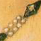

 A notorious challenge for adventure game parsers is to handle a collection of, say, ten gold coins, allowing the player to use them independently of each other, while gathering them together into groups in descriptions and inventories. Two problems must be overcome: firstly, the game has to be able to talk to the player in plurals, and secondly vice versa. First, then, game to player:
Class GoldCoin
with name 'gold' 'coin',
short_name "gold coin",
plural "gold coins";
(and then similar silver and bronze coin classes)
Object bag "bag" with name 'bag', has container open openable; GoldCoin ->; GoldCoin ->; GoldCoin ->; SilverCoin ->; SilverCoin ->; BronzeCoin ->;
Now we have a bag of six coins. The player looking inside the bag will get
>look inside bag
In the bag are three gold coins, two silver coins and a bronze coin.
How does the library know that the three gold coins are the same as each other, but the others different? It doesn't look at the classes but the names. It will only group together things which:
plural set, and“Indistinguishable” means they have the same name words as each other, possibly in a different order, so that nothing the player can type will separate the two.
▲ Actually, it's a little more subtle than this. What it groups together depends slightly on the context of the list being written. When it's writing a list which prints out details of which objects are providing light, for instance (as an inventory does), it won't group together two objects if one is lit but the other isn't. Similarly for objects with visible possessions or which can be worn.
▲▲
This ramifies further when the objects have a parse_name routine
supplied. If they have different parse_name routines,
the library decides that they are distinguishable. But if they have
the same parse_name routine, for instance by inheriting
it from a class definition, then the library has no alternative
but to ask them. What happens is that:
parser_action is set to the special
value ##TheSame, a value it never has at any other time;parser_one and parser_two
are set to the two objects in question;parse_name routine is called. If it returns:
name fields of the objects.▲▲
You may even want to provide a parse_name routine for
objects which otherwise don't need one, just to speed up the process
of the library telling if two objects are distinguishable – if
there were 30 gold coins in one place the parser would be doing a
lot of work comparing names, but you can make the decision much faster.
•▲▲
EXERCISE 79
Perhaps the neatest trick of parsing in any Infocom game occurs in
‘Spellbreaker’, which has a set of white cubes which are
indistinguishable until the player writes words onto them with a magic
burin (a medieval kind of pen), after which it's possible to tell
them apart. Imitate this in Inform.
· · · · ·
Secondly, the player talking to the computer. Suppose a game involves collecting a number of similar items, such as a set of nine crowns in different colours. Then you'd want the parser to recognise things like:
>drop all of the crowns except green
>drop the three other crowns
Putting the word 'crowns' in the name
lists of the crown objects is not quite right, because the parser will
still think that “crowns” might refer to a single
specific item. Instead, put in the word 'crowns//p'. The
suffix //p marks out the dictionary word “crowns”
as one that can refer to more than one game object at once. (So that
you shouldn't set this for the word “grapes” if a bunch
of grapes is a single game object; you should give that object the
pluralname attribute instead, as in §26
back at the start of this chapter.) For example the GoldCoin
class would read:
Class GoldCoin
with name 'gold' 'coin' 'coins//p',
short_name "gold coin",
plural "gold coins";
Now when the player types “take coins”, the parser interprets this as “take all the coins within reach”.
▲
The only snag is that now the word 'coins' is marked as
//p everywhere in the game, in all circumstances. Here is
a more complicated way to achieve the same result, but strictly in
context of these objects alone. We need to make the parse_name
routine tell the parser that yes, there was a match, but that it was a
plural. The way to do this is to set parser_action to
##PluralFound, another special value. So, for example:
Class Crown
with parse_name [ i j;
for (::) {
j = NextWord();
if (j == 'crown' or self.name) i++;
else {
if (j == 'crowns') {
parser_action = ##PluralFound; i++;
}
else return i;
}
}
];
This code assumes that the crown objects have just one name each, their colours.
•
EXERCISE 80
Write a ‘cherub’ class so that if the player tries to call
them “cherubs”, a message like “I'll let this go once,
but the plural of cherub is cherubim” appears.
•
REFERENCES
See the coinage of ‘Balances’.